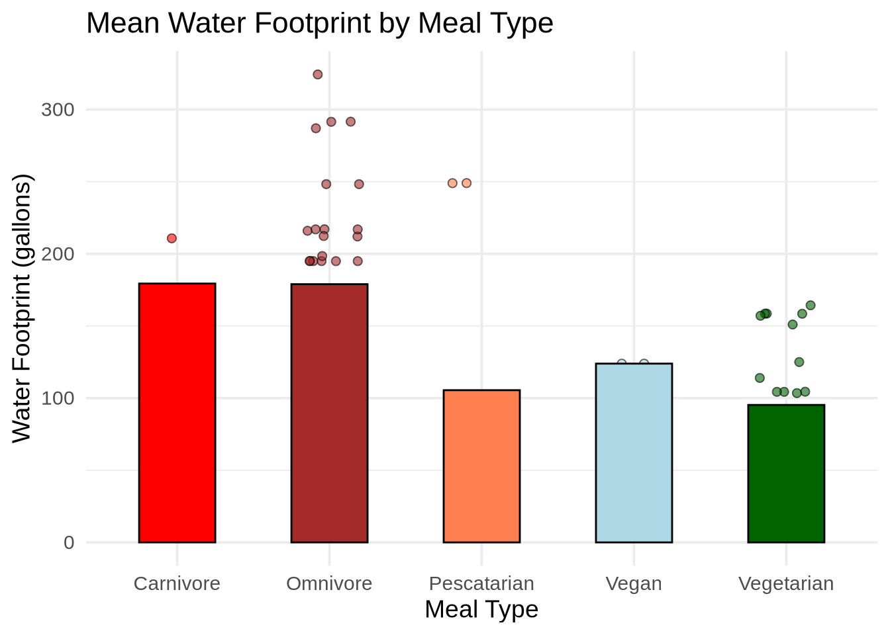

Warning: package 'tidyverse' was built under R version 4.4.2
Warning: package 'purrr' was built under R version 4.4.2
Warning: package 'lubridate' was built under R version 4.4.2
── Attaching core tidyverse packages ──────────────────────── tidyverse 2.0.0 ──
✔ dplyr 1.1.4 ✔ readr 2.1.5
✔ forcats 1.0.0 ✔ stringr 1.5.1
✔ ggplot2 3.5.1 ✔ tibble 3.2.1
✔ lubridate 1.9.4 ✔ tidyr 1.3.1
✔ purrr 1.0.4
── Conflicts ────────────────────────────────────────── tidyverse_conflicts() ──
✖ dplyr::filter() masks stats::filter()
✖ dplyr::lag() masks stats::lag()
ℹ Use the conflicted package (<http://conflicted.r-lib.org/>) to force all conflicts to become errors
library(here)
here() starts at /home/jovyan/Real_ENVS193_Homework_03/ENVS-193_homework-3
library(flextable)
Warning: package 'flextable' was built under R version 4.4.2
Attaching package: 'flextable'
The following object is masked from 'package:purrr':
compose
library(janitor)
Warning: package 'janitor' was built under R version 4.4.2
Attaching package: 'janitor'
The following objects are masked from 'package:stats':
chisq.test, fisher.test
library(ggplot2)library(readr)
Problem 1: Personal Data
[A] To compare my response variable and it’s fluctuation between categories in my data, I could calculate the mean water footprint in gallons for each meal type (omnivore, vegetarian etc.) to compare the impact of different dietary choices on water use. Different diets include foods with varying water demands (meat vs. vegetables), which will provide an informative comparison of how food choices could reduce overall daily water consumption.
Rows: 82 Columns: 7
── Column specification ────────────────────────────────────────────────────────
Delimiter: ","
chr (4): Meal_Time, Meal_Type, Packaging_Type, Food_Groups
dbl (2): Meal_Size, Water_Footprint
date (1): Date
ℹ Use `spec()` to retrieve the full column specification for this data.
ℹ Specify the column types or set `show_col_types = FALSE` to quiet this message.
# Create the plotggplot(Meal_Data, aes(x = Meal_Type, y = Water_Footprint, fill = Meal_Type)) +geom_jitter(width =0.2, shape =21, color ="black", size =2, alpha =0.6) +# show individual data pointsstat_summary(fun = mean, geom ="bar", width =0.5, color ="black", position =position_dodge(0.9)) +scale_fill_manual(values =c("Omnivore"="Brown", "Vegetarian"="Dark Green", "Vegan"="Light Blue", "Pescatarian"="Coral", "Carnivore"="Red")) +labs(title ="Mean Water Footprint by Meal Type",x ="Meal Type",y ="Water Footprint (gallons)" ) +theme_minimal(base_size =14) +theme(legend.position ="none")

Figure 1. This chart displays the mean water footprint (in gallons) for different diets (Carnivore, Omnivore, Pescatarian, Vegan, Vegetarian), with individual meal data displayed as jittered points. In the chart, omnivore and carnivore meals generally have the highest average water footprint, while vegetarian and pescatarian meals tend to have the lowest.